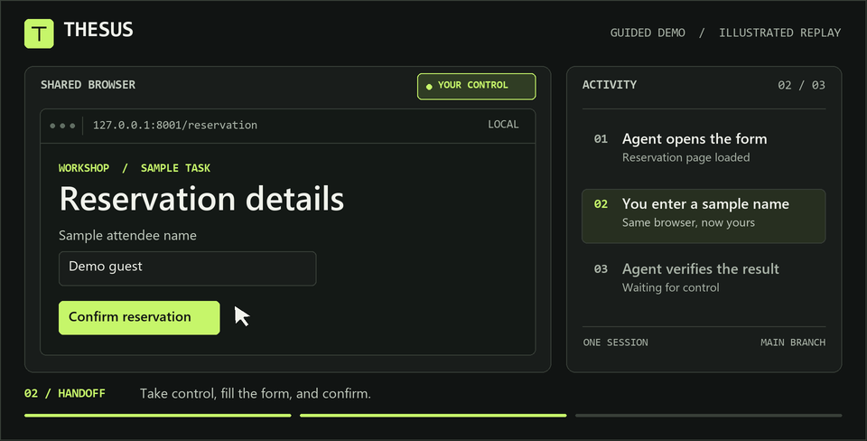

01 / Control
Take the wheel.
Click, type, and scroll in the live browser yourself. Return control in the same session.
Agentic browser workspace
Work in the same live Chromium page as your agent. Step in when you need to, then hand back control and pick up where you left off.
Runs locally Chromium + SQLite
SESSION TRACE
01 / Control
Click, type, and scroll in the live browser yourself. Return control in the same session.
02 / Review
Inspect proposed clicks, text entry, and form submissions before the agent acts.
03 / History
SQLite records conversations, decisions, and checkpoints. Fork a branch to explore another path.
Run it locally
Start THESUS from a local checkout with Python 3.12 or newer. The guided demo runs without model credentials.
Run the guided demopy -3.12 -m venv .workspace-venv
$workspacePython = '.\.workspace-venv\Scripts\python.exe'
& $workspacePython -m pip install -r requirements.txt
& $workspacePython -m playwright install chromium
$env:BROWSER_BACKEND = 'playwright'
& $workspacePython main.pyThen open 127.0.0.1:8000
